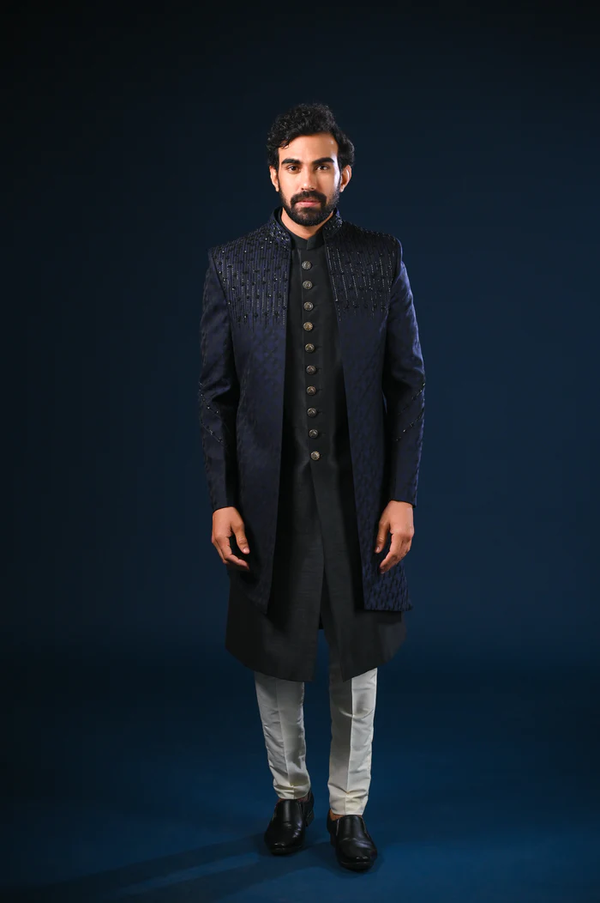
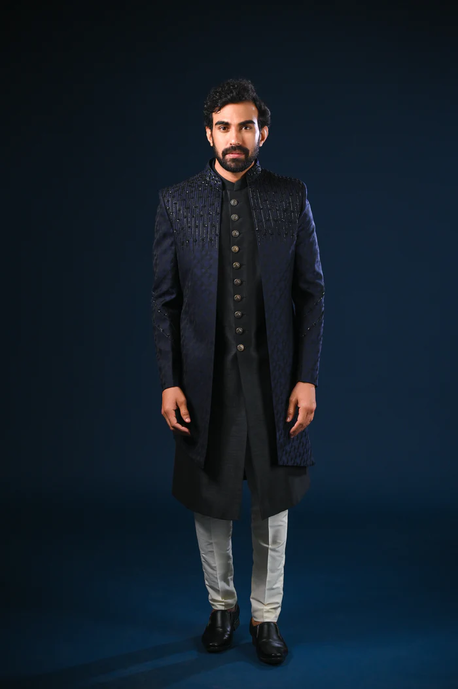

Dress to Express
Casual Attire
Casual dress code refers to clothing that is informal and comfortable, yet clean and professional. It's best to go with nicer casual wear and avoid the baggier items you wear around the house.
These are the examples that you can wear in a classy and smart casual ways:
 Indo-western casual suit
Modern casual attire
Indo-western casual suit
Modern casual attire
1. Simple Summer Business Casual
Examples of business professional attire: When dressing business professional, you can wear tidy dresses, slacks, skirts, slacks, dark-colored suits and ties. Business professional tops include neat button-down shirts or blouses with a blazer. Business professional shoes include heels, loafers or flats.
2. 1950's Mens Office Attire
1950s fashion is the menswear trend that won't quit. Cuban collar shirts, pleated trousers and knitted polos are eternally stylish and the generous cuts from the era of Elvis Presley and James Dean will have you oozing mid-century style.
3. The Classic Casual
Casual classic clothing is relaxed timeless clothing such as jeans and tee-shirts or sweaters. If you are not particularly interested in fashion trends, but want to feel stylish and look contemporary this is a good style for you.
4. Indo-Western Casual Suit
Indo western suit set are a fusion of western and south Asian fashion. Staying closing to the Indian roots, Indo-westerns explore the fashionable world of the west. It all began in the late 1970s when Indian fashion moved outside its boundaries and began incorporating western style elements.
5. 1950's Modern Casual Attire
This typically means more relaxed/unstructured silhouettes, like T-shirts, henleys, baseball tees, and slightly more relaxed-fit jeans. Maybe even jogger sweatpants if you're really dressing down. Dressing Up the Henley.